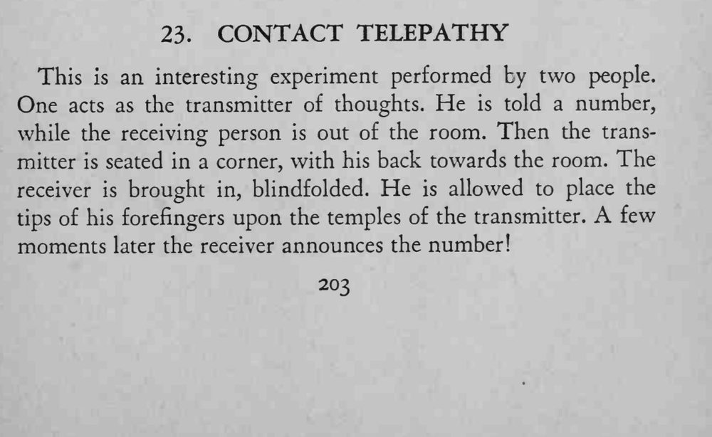
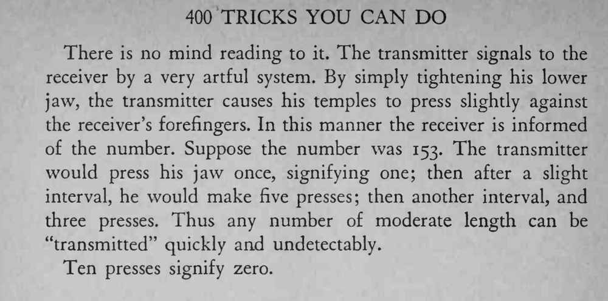

送信者背对全场坐在角落，接收者蒙着眼把手指按在他太阳穴上，片刻之后就说出了他被告知的数字。
下颚用力要小而匀、停顿要清楚，两人必须事先练熟节奏。


This is an interesting experiment performed by two people. One acts as the transmitter of thoughts. He is told a number, while the receiving person is out of the room. Then the transmitter is seated in a corner, with his back towards the room. The receiver is brought in, blindfolded. He is allowed to place the tips of his forefingers upon the temples of the transmitter. few moments later the receiver announces the number! There is no mind reading to it. The transmitter signals to the receiver by a very artful system. By simply tightening his lower jaw, the transmitter causes his temples to press slightly against the receiver's forefingers. In this manner the receiver is informed of the number. Suppose the number was 153. The transmitter would press his jaw once, signifying one; then after a slight interval, he would make five presses; then another interval, and three presses. Thus any number of moderate length can be "transmitted" quickly and undetectably. Ten presses signify zero.